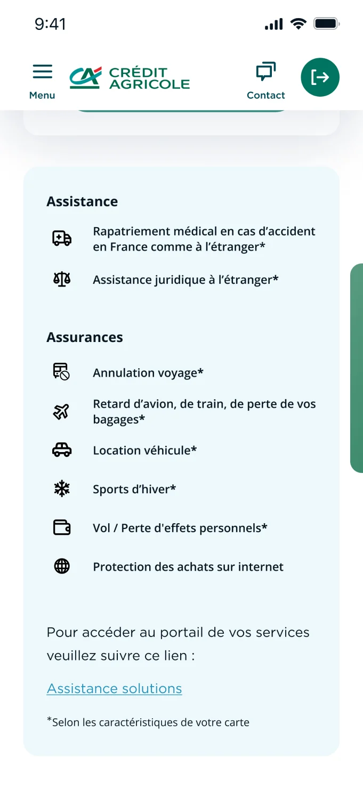
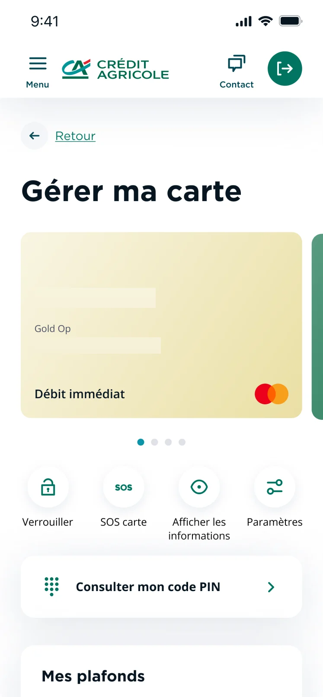
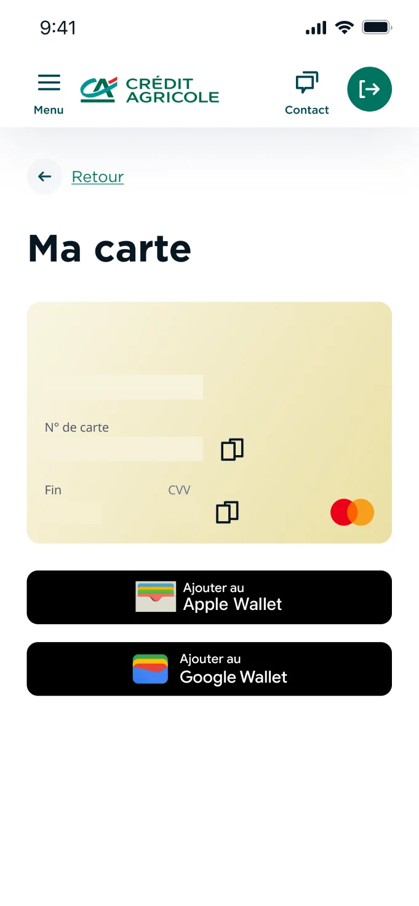
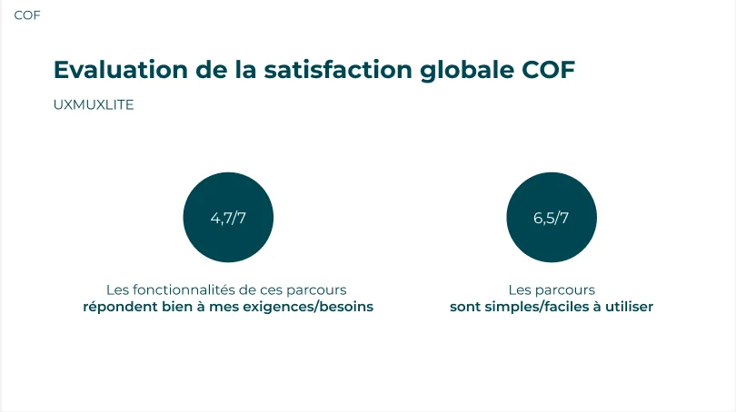
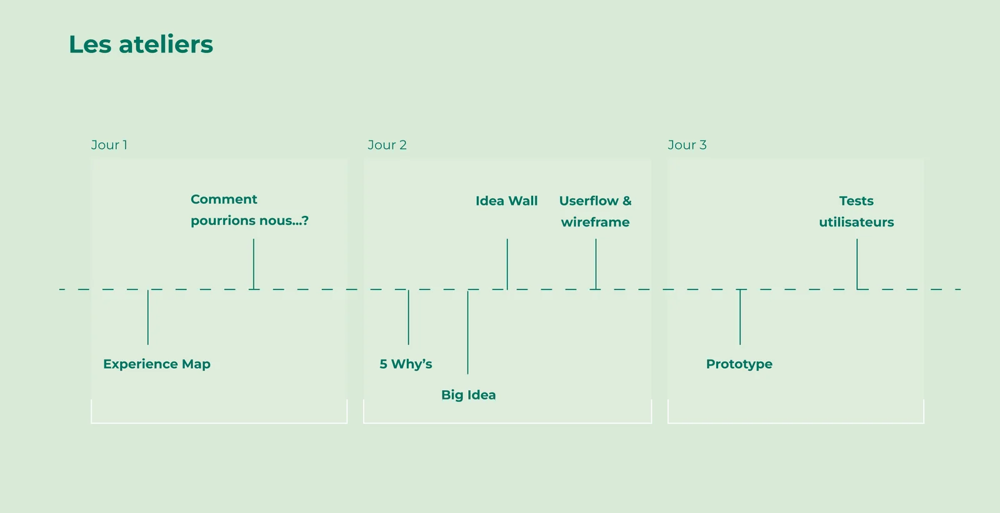
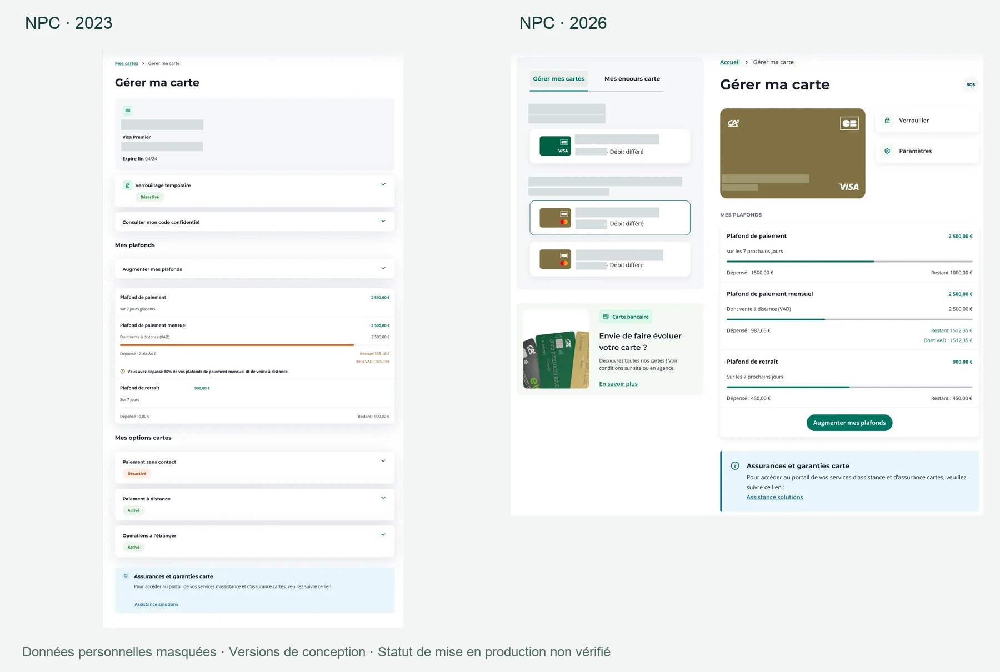
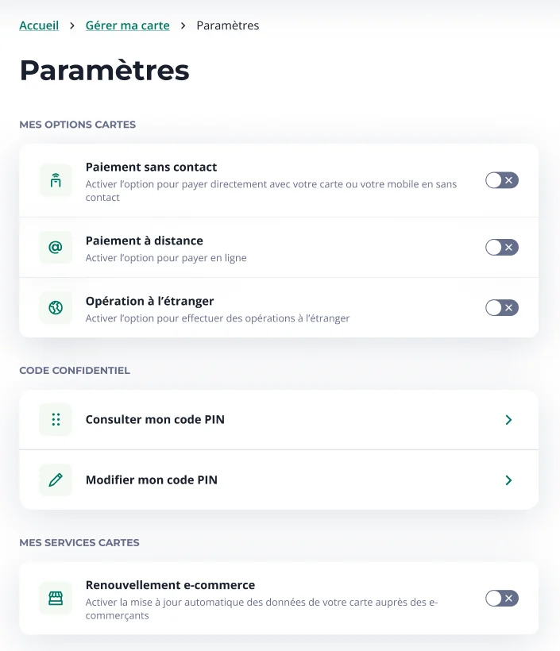
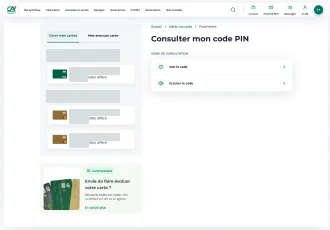
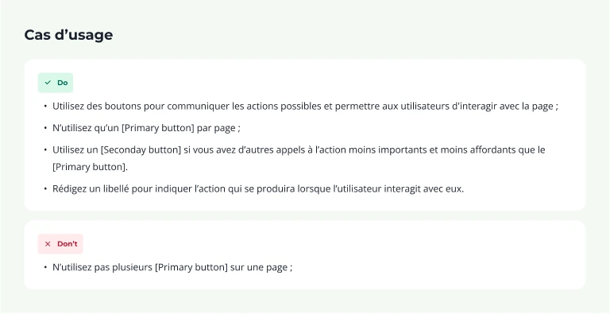

“100% human, 100% digital”
Cards & banking services. The full design process behind a consistent card experience, from customer to advisor: on the web with NPC, inside the Ma Banque app and on the advisor portal.



The mission
From 2 November 2023 to 30 October 2026 — close to three years — I was Senior Product Designer UX/UI at Crédit Agricole Technologies & Services, working on card payments and banking card products.
Losing a card, checking a PIN, raising a spending limit or preparing a trip abroad are simple intentions. Carrying them out, however, depends on the cardholder, their rights, the state of the card, strong authentication, eligibility and business rules. My work was to let the system absorb that complexity: so the customer identifies the right card, understands what is possible and acts with confidence — on the web with NPC, inside the Ma Banque app, and through to the in-branch advisor portal. Several structural challenges followed:
An architecture built to last
The original Card Universe had reached its scalability limits: a strongly vertical layout pushed content below the fold, and every new service made the page longer. It needed a management view designed for multi-card holders: card list, selected card, status and key actions, then settings and secondary services.
Rights, states and exceptions
Joint accounts, minors and legal guardians, multiple holders, multiple accounts, differing eligibility; cards active, locked, expired, blocked or being renewed. These cases had to be handled inside the main journeys rather than at the edges, explaining why an action depends on a parent or another party.
Making security understandable
Making strong authentication and PIN retrieval intelligible, and clearing the recurring confusion between the code received by SMS and the card's own PIN.
Designing trust, not just ease
On e-commerce renewal and Card On File, ease of use was already there; acceptance was not. Beneficiaries, data flows and the revocability of consent had to be made explicit.
Accessibility
Audio PIN playback, screen readers, keyboard navigation, contrast and 200% zoom, within the supplier's technical constraints. Consistently separating the usability question from regulatory compliance, never presenting design work as an audit.
Multichannel continuity
The same words, the same statuses and the same consequences, whether the customer is on the web, in the app, or talking to an advisor who picks the case up from their own portal.
My role
I led design for card products across three channels: NPC for the customer web, the starting point of the engagement; Ma Banque for the app, through progressive extension; and PUC, the staff portal, run in parallel as the advisor-side counterpart of every self-service feature.
I owned information architecture, user flows, wireframes, UI, Figma prototypes, test protocols and moderation, then documentation and delivery support. This was done with Product Owners and Business Analysts, card-payment business teams, the NPC, Ma Banque and PUC teams, developers, the Design Chapter, and the Muesli Design System and accessibility leads.
Main tasks
- Product framing and experience architecture
- Continuous discovery: protocols, moderation and research playback
- User flows, wireframes and detailed interface design
- Figma prototypes, documentation and delivery support
Secondary tasks
- Contributions to the Muesli Design System and its patterns
- Cross-team arbitration between business, engineering and accessibility
Design & Research Toolkit
Planning
The engagement did not follow a linear plan but a three-year continuous discovery cycle, paced by five waves of user testing. Each wave covered a distinct scope with its own panel: they illuminate different subjects and do not describe progress from one wave to the next.
Research deck
Continuous research
Hundreds of users were interviewed across various campaigns on this scope, beyond the five main waves. The figures collected are raw items scored out of 7, not normalised scores: panels and subjects differ, so no improvement curve can be drawn from them.
Playback always follows the same order: observation, user impact, recommendation. Ratios are strictly grounded in the verbatims and their actual panel size; no verbatim was rewritten for this portfolio.

Mobile Payment / CA Pay sprint
On 19, 20 and 21 May 2026, a three-day sprint explored bringing Paiement Mobile CA — until then a separate app — into Ma Banque. Lean Canvas, benchmark, Experience Map and How Might We on day one; 5 Whys, Big Idea, user flow and wireframes on day two; prototype and user testing on day three.
On a four-person panel, 3/4 found access simpler thanks to the integration into Ma Banque and 4/4 found enrolment simple, smooth and reassuring. These ratios describe a panel reacting to a prototype, not adoption or any deployment effect.

The gap between ease and acceptance
On Card On File, usage is rated easy (6.5/7) but the perceived need is far lower (4.7/7). A smooth journey does not create acceptance: beneficiaries, data flows and control over consent have to be designed explicitly.
A PIN must be both readable and private
ePIN is well received (6.5/7 on need and ease, 6.7/7 on comprehension). “Show the code” is preferred and Securipass reassures, but the confusion between the SMS code and the card PIN persists, and audio playback raises a privacy question in public spaces.
Blocking a card reassures but takes too long
The self-service journey is understood and felt reassuring (5.2/7 on need, 5.8/7 on ease), but too long in a real loss or theft situation. Avenues explored: an SOS entry point, fewer steps, and explicit replacement, delay and fees.
A misread status becomes an alert
On an expired card, red combined with the icon could read as a blocked or stolen card. Status, wording and hierarchy were reworked; “7 rolling days” was also read as the next seven days.
The solution
Card Universe
The full redesign moved from a page that keeps growing to a management view: card list, selected card, status and key actions, then settings and secondary services. Key actions stay identifiable without the page expanding with every new service.
The comparison below puts the 2023 and 2026 design files side by side. It is a design comparison: it does not document production release dates.

Settings and secondary actions
Testing showed that Settings is a natural landmark: it is where users look for anything that is not an immediate action. Secondary services were grouped there, which frees the top of the screen for status and key actions.

ePIN
Checking a PIN securely, visually or by audio, meant handling authentication, legibility and privacy together. The extracts below come from the NPC web screens of the UT5 protocol; the code was already blurred at source and the visible “10” is a countdown.

Ma Banque interfaces
In the app, the Card Universe brings together on a single screen the card's identity, its status, the key actions — lock, SOS card, show details, settings — and access to the PIN. Attached services, assistance and insurance, can be consulted without leaving the card's context, and Wallet enrolment is treated as a natural continuation of viewing the card details.
Names, card numbers, expiry dates and security codes visible at source have been masked. No interface was recreated or artificially upscaled.
Muesli Design System
The rule was to look for the answer in Muesli first, then question or evolve the pattern if the context demanded it, rather than creating a component by default. Buttons, Link, Chips, bottom sheets, navigation, forms and funnels served as the common base across all three channels.

Prototype
Find the prototype on Figma. For confidentiality reasons the prototype is not accessible at the moment.
The impact
The figures below are raw items scored out of 7 from the test protocols, not normalised scores or business indicators. Panels and scopes differ from one wave to the next: they do not describe progress. No adoption, deployment or volume figure is claimed here.